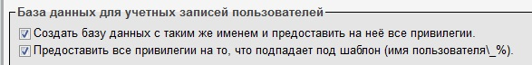

Установка на другие локальные сервера и на сервера хостинга мало чем отличаются, поэтому разберем только этот вариант.
Шаг 1. Загрузка Wordpress на сервер
В папку, где хранятся файлы нашего сайта, распаковываем WordPress
Шаг 2. Настройка PhpMyAdmin
Заходим в phpmyadmin (ПКМ по OpenServer - дополнительно - Phpmyadmin. Логин для входа - root, пароль по умолчанию пустой). В Phpmyadmin необходимо создать пользователя. Для этого открываем вкладку "Учетные записи пользователя".
В этой вкладке нажимаем "Добавить учетную запись пользвателя"
В отрывшемся окне заполняем поле "Имя пользователя". Для создания пароля жмем кнопку "Сгенерировать", не забываем скопировать себе пароль.
Далее ставим две галочки в разделе "База данных для учетных записей пользователей".
В разделе "Глобальные привилегии" так же отмечаем все галочки

После того как все заполнили в конце страницы жмем кнопку "Вперед". Вместе с пользователем создастся база данных, в которой будут храниться данные Wordpress. Имя базы данных полностью совпадает с именем пользователя.
Шаг 3. Настройка Wordpress
Открываем папку с сайтом и ищем там файл - "wp-config-sample.php". Необходимо переименовать этот файл что бы его имя стало: "wp-config.php". Затем открываем этот файл через SublimeText.
Здесь нам нужны четыре строчки:
Шаг 4. Завершаем настройку Wordpress
Теперь просто запускаем наш сайт.
WordPress выдаст нам приветственную страницу на которой мы вводим следующие данные:
После того как мы все ввели и нажали кнопку "Вперед" WordPress выдаст уведомление о том, что установка завершена.
Жмем кнопку войти, откроется окно авторизации, там уже все будет введено, жмем войти и мы оказываемся в консоли WordPress. На этом установка завершена.